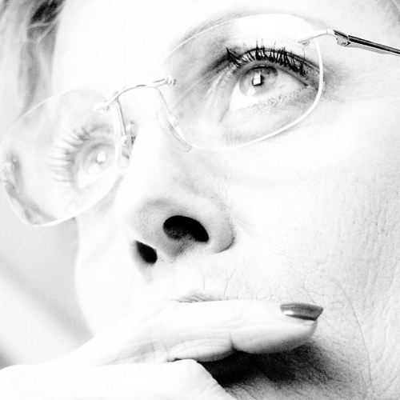

A freelance translator since 1989, I am enrolled in the Bergamo Chamber of Commerce (Italy) as an expert consultant for English-Italian translations and an auxilary member of the A.I.T.I. (Italian Association of Translators and Interpreters), with a vast experience in the translation of technical texts, particularly in the medical and IT fields. In 1994 I was accepted as an external translator of both English and Spanish to Italian for the External Translation Units of the European Parliament and the European Commission. I have collaborated for many years with Yamaha Motor Italy in the translation of technical and marketing documentation, with the computer science publication PC Magazine and with the French company Dassault Systemes − a world leader in the production of PLM, CAD and 3D software. At present, I work mainly on translations for the medical sector (cardiology, neurology, general and specialized surgery, radiology, nuclear medicine, orthopedics, clinical studies, market research for the pharmaceutical sector and medical information sites). I am a lover of figurative art and photography and have taken part in the translation and editing of several catalogues for art exhibitions. As expert in terminology, I have worked with several teams of translators for the creation of technical and specialized dictionaries.
Some of my end clients...
Information Technology: Atheros, Attachmate, Canon, Dassault Systèmes, DEC, Hewlett Packard, MatrixOne, Microsoft, Novell, Oracle, Scansoft, Tacton
Life Sciences: Abbott, Astra Zeneca, Bayer, Beckman Coulter, Bio-Rad, Cepheid, Becton Dickinson, COBE Laboratories, Cook Group, Healthline, Mayo Clinic, Medtronic, Johnson & Johnson, Medscape, Novartis, Nucletron, Orthofix, Pharmacia & Upjohn, Philips Ultrasound, Pfizer, Q-Med Aesthetics, Philips, Roche, Siemens, Smith & Nephew, Stryker, Smiths Medical, St. Jude Medical, Stryker, Vascular Architects, and many others
Art Galleries: Galleria Astuni, Galleria Contini
Miscellaneous: Brunswick (Mercury Marine), Della Toffola S.p.A., Ente Nazionale Energia Elettrica, Metalgalante S.p.A., PC Magazine, Ryanair, SKF, Yamaha Motor Co. Italy
PUBLICATIONS
1. Dizionario Tecnico & Commerciale It/Sp/It, Ed. Sansoni, 1990 (ISBN 88-383-1349-0) 2. Elsevier's Textile Dictionary, Elsevier, 1993 (ISBN 0-444-88709-1) 3. L'automazione del montaggio, B. Lotter, Ed. Tecniche Nuove, 1993 (ISBN 88-7081-692-3) 4. Botero a Venezia − sculture e dipinti. Catalogue of Botero's exhibition in Venice, Palazzo Ducale, 2003